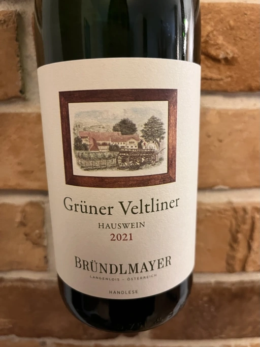
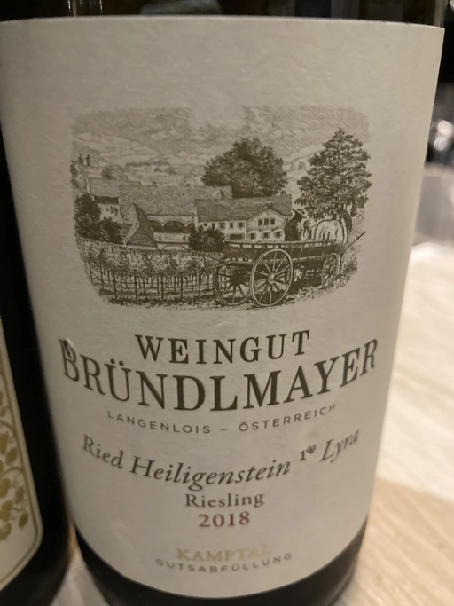
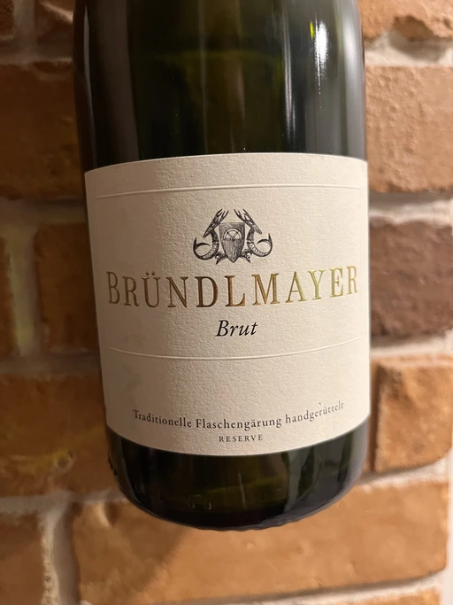
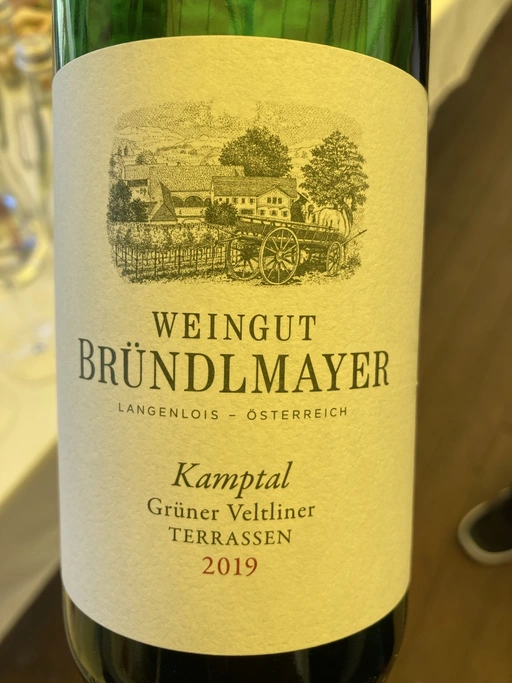
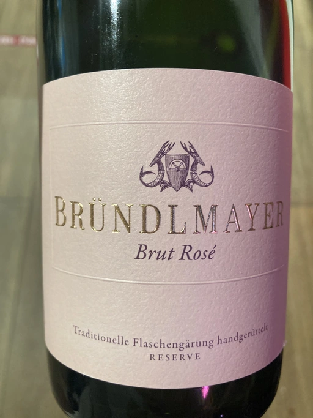
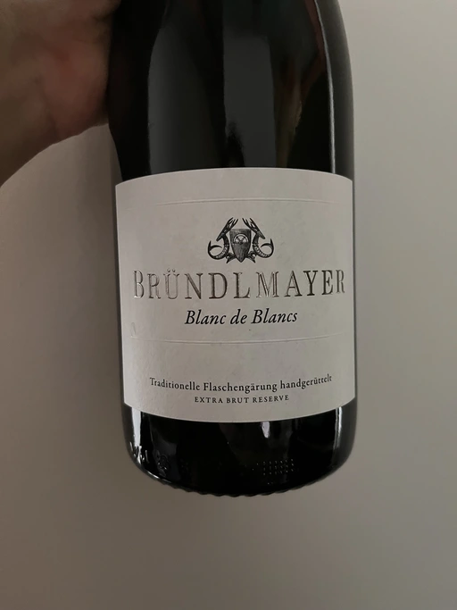
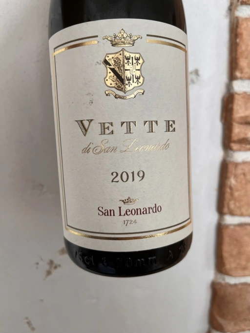

- Type
- White Still, Dry
- Producer
- Weingut Bründlmayer
- Vintage
- 2021
- Location
- Austria, Landwein aus Österreich
- Grapes
- Grüner Veltliner
- Alcohol
- 12
- Sugar
- NA
- Price
- 426 UAH
- Cellar
- N/A
Ratings
2022-07-03 - 7.00
You would expect a light chilled wine to ease the unbearable heat. But this Hauswein Grüner Veltliner only makes things worse. Restrained bouquet with green apple and field flowers. Oily, overly tropical palate with some interesting salinity. Flavourful, with a long melon-like aftertaste. And maybe some passion fruits. I really admire some aspects of this wine. It is well made. But every good thing drowns in vulgarity. Maybe it’s just not my thing.
Related

Weingut Bründlmayer
Riesling Heiligenstein Lyra - 2018

Weingut Bründlmayer
Brut Reserve L11556/04/18 - NV

Weingut Bründlmayer
Grüner Veltliner Kamptaler Terrassen - 2019

Weingut Bründlmayer
Brut Rosé - NV

Weingut Bründlmayer
Blanc de Blancs Extra Brut Reserve L11778/08/15 - NV

Weingut Bründlmayer
Zweigelt - 2015

San Leonardo
Vette - 2019